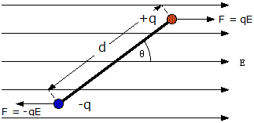
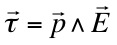
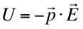

"
When you look at yourself from a universal standpoint,
something inside always reminds or informs you that there are
bigger and better things to worry about."
Albert Einstein
We have already considered the electric field created
by an electric dipole. Now we consider the behavior of an
electric dipole placed in a uniform (constant) electric field.

Note that since the force on each of the charges are equal
in magnitude but opposite in direction there is no net
force on the dipole.
However, since the two forces are not concurrent, there is
a non-zero torque about the center of the dipole given by,

Using the definition of the work done by a torque
(rotational force), it can be shown that the
electrical potential energy stored by a dipole in an
external field is given by,

A dipole placed in a
uniform electric field will rotate until it is
aligned "-" to "+" along the field - this is the
lowest energy configuration.
If the external
field is not uniform, the net force will not be
zero.
What is a quantum particle?
The dreams that stuff is made of!